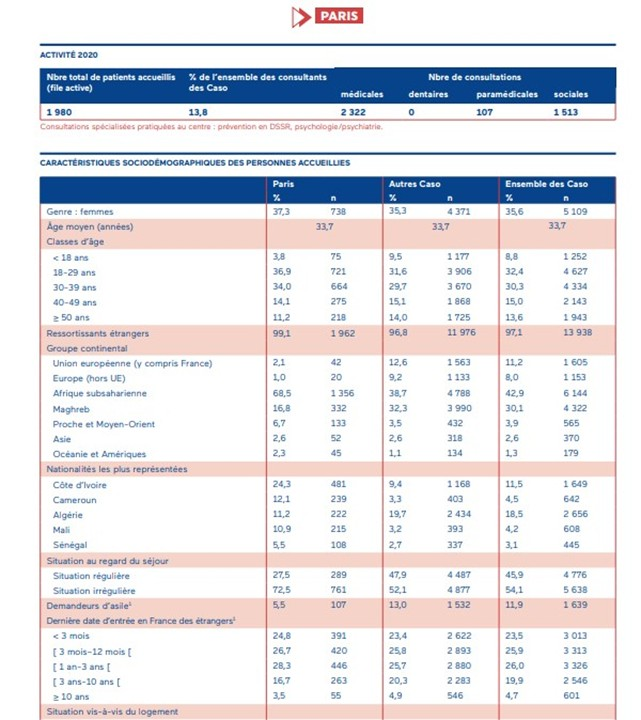

Les discriminations dans l'accès aux soins pour les personnes en situation irrégulière
Les personnes en situation irrégulière rencontrent souvent des obstacles majeurs pour accéder aux soins de santé. Ces barrières peuvent être multiples et interagissent entre elles, rendant difficile l'accès aux services médicaux essentiels.
Caractéristiques sociodémographiques des personnes accueillies
Ce tableau montre les données démographiques des patients accueillis dans un centre de santé à Paris en 2020. Il met en évidence que la majorité des personnes accueillies sont des ressortissants étrangers, avec une forte représentation des nationalités africaines.
Les principales raisons pour lesquelles ces personnes subissent des discriminations dans l'accès aux soins incluent :
- Barrière linguistique : La difficulté à communiquer efficacement avec les professionnels de santé peut entraver l'accès aux soins.
- Difficultés financières : Le manque de moyens financiers peut empêcher certaines personnes de payer les frais médicaux ou les assurances nécessaires.
- Complexité administrative : Les procédures administratives complexes liées à l'obtention de documents légaux ou d'assurances sociales peuvent décourager les personnes en situation irrégulière de chercher des soins.
"J'ai été confronté à de nombreux obstacles pour obtenir des soins médicaux simples. La langue était un problème, mais aussi le fait de ne pas avoir de papiers en règle."
Pour améliorer l'accès aux soins pour ces populations vulnérables, il est crucial de mettre en place des mesures spécifiques :
- Offrir des services d'interprétation pour surmonter les barrières linguistiques.
- Établir des partenariats avec des organisations caritatives pour aider à couvrir les coûts médicaux.
- Simplifier les procédures administratives et offrir des guides pour faciliter l'accès aux soins.
Question de réflexion
Quelle est la principale raison pour laquelle les personnes en situation irrégulière pourraient subir des discriminations dans l'accès aux soins ?